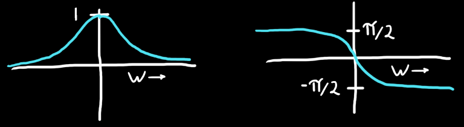
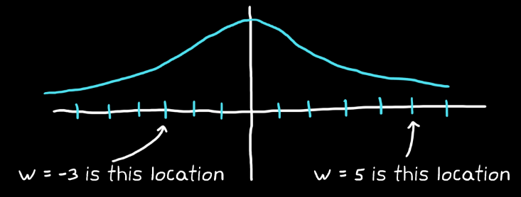

Switching from time to frequency domain has benefits:
Converts the cumbersome integration step of convolution into a multiplication.
It is easier to observe meaningful behaviour in frequency domain in the case of systems that have (good or bad) oscillations.
No information is lost when representing a signal in the frequency domain - the exact same information is just represented in a different format.
Represenation
In the frequency domain, an oscillatory motion-response to a force can be fully characterised by just 3 parameters:
Frequency
Amplitude
Phase shift corresponding to the starting position
A signal is thought of in terms of the characteristics (Amplitude and phase) of the frequencies that make it up rather than how it changes over time, i.e. to recreate a sine/cosine wave, only the above information is required.

The two graphs above are a function of $\omega$, i.e. the value of $\omega$ gives an indication of where (the location) on the frequency line the signal is.

Example
A signal in the time domain that looks random and chaotic, can be represented clearly in the frequency domain.